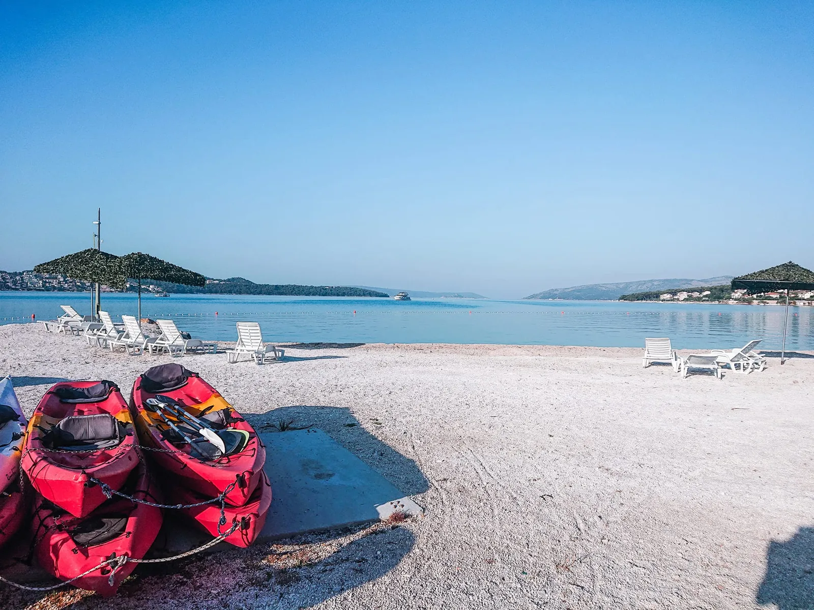

Written & photographed in Trogir by Ante — independent, no paid placements.

Most of Trogir's swimming is pebble and clear water, not sand — and the best coves are a short hop across to Čiovo. Here's where to go for lively, for family, and for quiet.
Four very different stretches of coast, all within a short drive, bus or boat of the old town — see them ranked in our best beaches in Trogir guide, or browse things to do in Trogir.
A long pebble beach on Čiovo nicknamed "Copacabana", lined with bars, sun loungers and water sports. Busy and fun.
East of town by a river mouth and nature reserve. Shallow, partly sandy, shaded by pines — the closest to a sandy beach here.
A long, gently shelving pebble beach in Seget with shade, cafés and a resort behind it. Easy and well-equipped.
Kava, Mavarčica and the smaller bays on Čiovo's far side: crystal water, pine shade, almost no crowds. A car helps.
A two-kilometre promenade of pebble beach, beach bars, loungers, pedalos and inflatable parks. This is where to go if you want music, cocktails and a bit of buzz. Get there early in August to claim a spot.
Set where a small river meets the sea beside a protected wetland, Pantan has the closest thing to sand around Trogir, shallow water for children and shade from the pines. It's an easy walk or short bus ride from town.
A long, well-kept pebble beach backed by a big resort, with cafés, loungers, gentle water and plenty of shade. Easy parking and facilities make it a low-stress choice with kids.
Drive the coast road around Čiovo and you'll find small bays with startlingly clear water and pine shade. Mavarčica needs a short walk down to reach, which keeps the crowds away. Bring everything you need — facilities are minimal.
The Blue Lagoon and the coves of Šolta are only reachable by boat — and they're the clearest water around Trogir.
* Tour links go to GetYourGuide — free for you; we earn a small commission on a booking.
Mostly no — Trogir's beaches are pebble and rock with clear water. The closest to sand is Pantan, east of the old town by a nature reserve. See them all ranked in our best beaches in Trogir guide.
Medena Beach in Seget: a long, gently shelving pebble beach with shade, cafés, facilities and easy parking. Pantan is the runner-up thanks to its shallow water.
The far-side coves like Kava and Mavarčica are much easier with a car or scooter, as facilities and buses are limited. A hire car from Split Airport makes them simple to reach.
The clearest water is offshore at the Blue Lagoon, reachable only by boat. A half-day boat trip to the Blue Lagoon is the easy way to swim and snorkel there.
Found your beach? Line up a place to stay nearby and the day trips worth leaving the coast for.
Written & photographed in Trogir by Ante — independent, no paid placements.